Active-Link Tables
Overview
Note: Active-Link tables are available in the 'Platinum' edition of Version 9, plus all editions of Version 10 and newer.
Active-Link tables allow you to work with data in SQL tables. An active-link table is a local Alpha Five table that is dynamically populated with data from a remote SQL database. Any changes that you make to the local active-link table are immediately persisted (i.e. saved) to the remote database. This means that you can build Alpha Five forms that update, insert and delete records in remote SQL tables. In addition, it means that you can use your knowledge of how to work with tables using Xbasic to manipulate data in remote SQL databases.
From the Xbasic perspective, an active-link table is
the same as a regular Alpha Five table. All of the Xbasic methods that you
can use on a native Alpha Five table can be used on an active-link
table. For example,
The following describes what we mean when we say that an active-link table is 'dynamically' populated with data from a remove SQL database:
Say you define an active-link table on a SQL table that has 50 million rows. When you open the active-link table, Alpha Five will dynamically create a local table (i.e. a .dbf file) and it will fetch the first 50 rows from the SQL table that satisfy the SQL SELECT statement's WHERE clause. Since only a small subset of the rows in the SQL table are being brought down from the server, this will happen quickly. If you then move the record pointer past the last fetched record, Alpha Five will go back the server to get the next batch of records.
The size of the batch can be set in the active-link table definition. Generally, Alpha Five will have pre-fetched data before you actually need it, so when you open a browse on an active-link table and hit page down repeatedly, the browse will feel responsive because Alpha Five will already have the data in its cache. The exception will be if the user tries to navigate to the last record in the browse. Alpha Five will then have to fully populate the local cache, and in the case of a 50 million record table, this will take a very long time! (Of course, should you actually inadvertently try to navigate to the last record, the status bar will show a progress meter with a cancel button that will allow you to cancel the operation, rather than forcing you to wait until 50 million records are fetched from the server.) Because of this, an application that is built on active-link tables should always ensure that there is a suitable WHERE clause in the SQL statement for the active-link table. Typically, this WHERE clause might include an argument so that you can prompt for a value, or pass a value in programmatically, when the table is opened.
For example, the following WHERE clause contains an argument for the state value: WHERE state = :whatstate.
The following Interactive window session shows some examples. Assume that the local Alpha Five table called 'mysql_customer' is an active-link table that is bound to the 'customers' table in a MySQL database. Assume also, that the SELECT statement defined for this active-link table has a WHERE clause that uses an argument. e.g. SELECT * FROM customers WHERE city = :whatcity.
Notice how the table.open() method allows you to pass in argument value.
dim args as sql::arguments
args.set("whatCity","paris")
t = table.open("mysql_customers",args)
?t.city
= "Paris "
?t.records_get()
= 2
t.close()
args.set("whatCity","london")
t = table.open("mysql_customers",args)
?t.city
= "London "
?t.records_get()
= 6
If you executed the table.open() method without passing in arguments, Alpha Five would display a dialog box prompting for the missing argument values.
Creating Active Link Tables
To create a new active-link tables, you select the Tables/Sets tab on the Control Panel, and then either right click on the white space on the Control Panel and select New Table, Active Link Table... from the menu, or click the 'New' button at the top of the Control Panel.
|
Note: Yet another way to create multiple active-link tables is from the
Welcome screen when Alpha Five first starts up. The 'Create a database
from linked data' option allows you to create a new Alpha Five database
and populate it with many active-link tables in a single step.
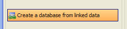
|
Alpha Five allows you to create multiple active-link tables, or a single table. The single table option gives you a great deal of control over how the active-link table is defined. The multiple table option makes default selections for all of the options. In many cases these default options will meet your needs. Even if you select the multiple table option, you can always go back later on and edit the definition of an individual active-link table definition.
|
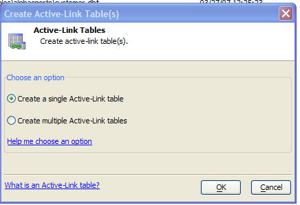 |
|
Creating New Active-Link Tables |
Regardless of which option you choose, the first screen of the Active-Link Table genie allows you to specify how to connect to the SQL database you want to link. You can either specify a named connection string, or an ad hoc connection string. It is strongly recommended that you use named connection strings when you define your active-link tables. If your active-link tables use named connection strings, you can point an entire application from a development version of your database to a production version of your database by editing the named connection string.
Note: You can manage named connection strings by selecting the Tools, External Databases command from the menu when the Control Panel has focus.
|
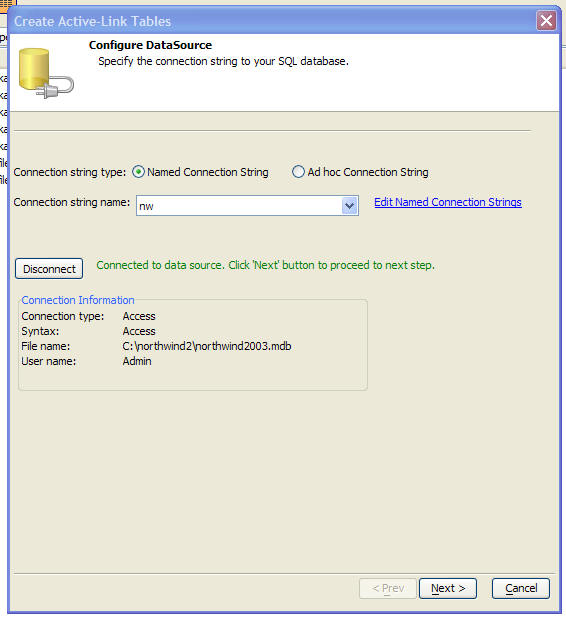 |
|
The Create Active-Link Tables Genie - Page1 |
Creating a Single Active-Link Table
When you select the single active-link table option, the next screen of the genie allows you to specify the SELECT SQL statement that Alpha Five will use to retrieve records from your SQL database and populate the active-link table.
If you choose the 'Columns from a table or view' option, then you can select the table, and the columns from that table, and Alpha Five will automatically generate the SQL SELECT statement for you.
If you choose the 'Custom SQL' option, then you can enter you own SQL SELECT statement, or you can specify a stored procedure.
When specifying a custom SQL statement, you must specify if you are using portable or native SQL. By using portable SQL, you ensure that you can easily move your application from one vendor's database to another without having to make any modifications to your application. Alpha Five automatically converts portable SQL statements to the correct syntax before sending the statement to the database engine.
|
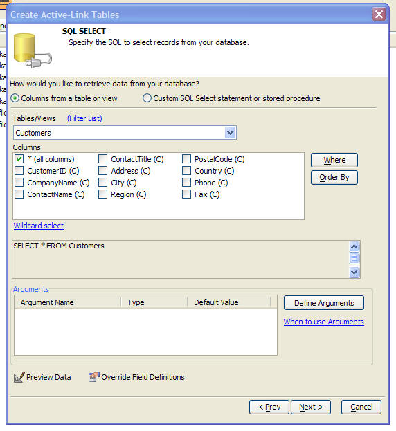 |
|
The Create Active-Link Tables Genie - Page2 |
Alpha Five automatically determines the field type and size of every field in the active-link table. There may be situations in which you want to override Alpha Five's decisions. For example you might have a long text field in the SQL table that you happen to know contains HTML text. By default, Alpha Five will create a Memo field in the active-link table to display this field. However, you might want to change this to an HTMLMemo field so that when the data in this active-link table is viewed in a Form or Browse layout, it will properly render the HTML. You might also want to change the field name that the active link table uses for a particular field.
To override the field definitions in the active-link table, click the 'Override Field Definitions' button. The following dialog is displayed:
|
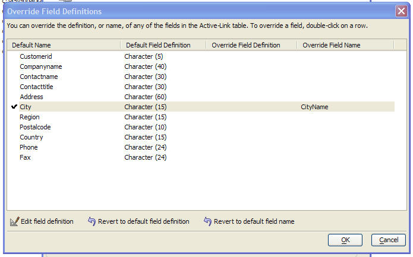 |
|
The Create Active-Link Tables Genie - Specifying Field Definitions of the Active-Link Table |
In the screen shown above, the field name of the 'City' column in the active-link table has been changed to 'CityName' (but the field definition was not overwritten).
The next genie screen (show below) allows you to configure the UPDATE, INSERT and DELETE SQL statements that are used to update the remote SQL table when the user edits, deletes or inserts records in the active-link table.
You can configure the active-link table so that updates are disallowed, while still allowing inserts and deletes, or any other combination, by checking the 'Allow updates', 'Allow inserts' and 'Allow deletes' checkboxes.
If you check the 'Active-line table is read-only' checkbox, then the 'Allow updates', 'Allow inserts' and 'Allow deletes' checkboxes are all set to false.
In addition to turning off updates completely, you can also selectively mark certain fields as read-only by checking the 'Some fields are read-only' box and then specifying the field list.
In most situations, you can accept all of the default settings on this page. Alpha Five will automatically generate the appropriate SQL UPDATE, INSERT and DELETE statements. However you have a lot of flexibility in configuring how data is written to the remote SQL table by defining your own UPDATE, INSERT and DELETE statements. If you want to call stored procedures when data is written to the remote table, then you must specify the SQL yourself - you cannot use the auto-generated option.
Note: If your active-link table is based on a JOIN (i.e. it selects data from multiple remote tables), then the active-link table is automatically set to read-only. Only active-link tables that select data from a single table can be updateable. If you want to create a form that updates multiple remote tables, then you should create active-link tables for each remote table and then combine the tables into a Set (see the Tables/Sets tab of the Control Panel). You can then build a Form that is based on your Set and that will allow you to do updates against multiple remote tables.
|
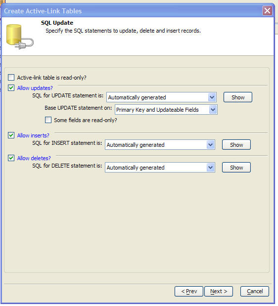 |
|
The Create Active-Link Tables Genie - Page3 |
The final page of the Active-Link Genie (when the single active-link table option is selected) is shown below.
An important option on this page allows you to specify if the user should be prompted for a userid and password, password only, or nothing, when the active-link table is opened.
|
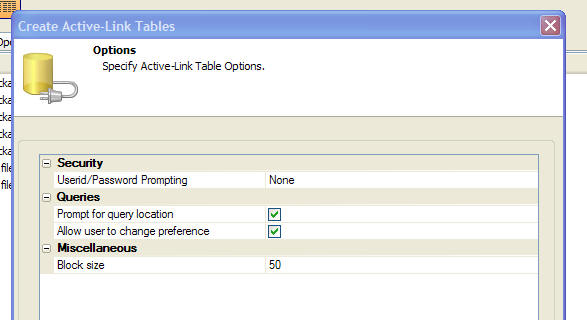 |
|
The Create Active-Link Tables Genie - Page4 |
Watch video demonstration of the Active-Link Table Builder - part1
Watch video demonstration of the Active-Link Table Builder - part2
Watch video demonstration of the Active-Link Table Builder - part3
Creating Multiple Active-Link Tables
When you select the multiple active-link tables option, the next screen of the genie allows you to select the list of tables for which active-link definitions should be created.
|
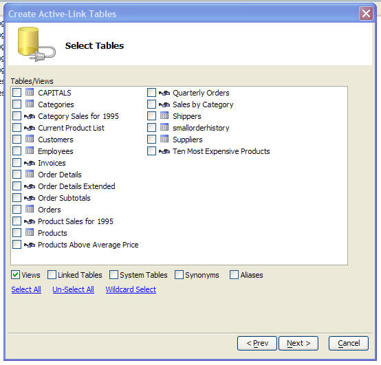 |
|
The Create Active-Link Tables Genie - Creating Multiple Active-Link Tables At Once |
The final genie screen allows you to set options that are applied to all of the active-link tables that are created.
Remember, after the active-link tables have been created in this batch operation, you can edit individual active-link tables and edit their definitions.
|
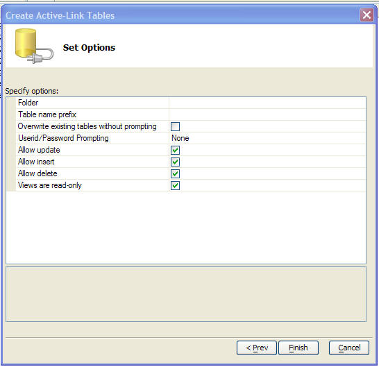 |
|
The Create Active-Link Tables Genie - Last Page When Defining Multiple Active-Link Tables At Once |
Watch video demonstration of this feature.
Behind the Scene on Active-Link Table Definitions
The active-link table definition is stored in a file with the same name as the active-link table, but with a .dbp extension.
When you define an active-link table, the definition includes the following properties:
SELECT command - this is the SQL command that is used to query the server database for the records that will be displayed in the active-link table. This can be a standard SQL SELECT command ( that extracts data from a single table, or joins multiple tables), or it could be a stored procedure. For example:
SELECT * FROM customers WHERE country = 'USA'
Note that the SELECT command can include arguments. If so, the argument values can be passed in when the active-link table is opened, or Alpha Five can prompt for the argument values. If a form, browse, report layout, or operation is based on an active-link table that uses arguments, then when the layout is opened, you can pass in the argument values.
COUNT command - this is the SQL command that is used to return the count of the number of records returned by the SELECT command. Note that the WHERE clause for the COUNT command must match the WHERE clause for the SELECT command. For example:
SELECT count(*) from customers WHERE country = 'USA'
UPDATE command - this is the SQL command that is used to save changes that are made to data in the active-link table to the server database. This could be a SQL UPDATE command, or it could be a stored procedure. The syntax of the UPDATE command determines whether Alpha Five uses optimistic locking techniques to prevent users from overwriting data or not. The UPDATE command can be a complete UPDATE SQL statement, a stored procedure, or just a WHERE clause. If you just specify just a WHERE clause, then Alpha Five will automatically generate the rest of the UPDATE statement based on the fields that were actually edited. By default, when you create an active-link table, the UPDATE command contains just the WHERE clause. For example, here is the UPDATE command for an active-link table that links the Customers table in the sample Access Northwind database:
WHERE (CustomerID = :old.CustomerID OR (CustomerID IS NULL AND :old.CustomerID IS NULL)) AND CompanyName = :old.CompanyName AND (ContactName = :old.ContactName OR (ContactName IS NULL AND :old.ContactName IS NULL)) AND (ContactTitle = :old.ContactTitle OR (ContactTitle IS NULL AND :old.ContactTitle IS NULL)) AND (Address = :old.Address OR (Address IS NULL AND :old.Address IS NULL)) AND (City = :old.City OR (City IS NULL AND :old.City IS NULL)) AND (Region = :old.Region OR (Region IS NULL AND :old.Region IS NULL)) AND (PostalCode = :old.PostalCode OR (PostalCode IS NULL AND :old.PostalCode IS NULL)) AND (Country = :old.Country OR (Country IS NULL AND :old.Country IS NULL)) AND (Phone = :old.Phone OR (Phone IS NULL AND :old.Phone IS NULL)) AND (Fax = :old.Fax OR (Fax IS NULL AND :old.Fax IS NULL))
In this example, you will note that the argument values have :old prefixes. This indicates that the argument will be populated with the original value in the field (before any changes are made to the field).
Note that this UPDATE command omits the code to set field values. Alpha Five will auto-generate it.
You could change the UPDATE command to:
WHERE (CustomerID = :old.CustomerID)
By doing this, however, you have effectively turned off optimistic record locking because the update will no longer fail if the record has been edited by another user.
Here is a simple example in which a complete SQL UPDATE statement has been specified:
UPDATE customers SET Contactname = :new.Contactname, city = :New.City WHERE (customerID = :old.CustomerID)
In this ultra simple UPDATE command there is no optimistic record locking, and only the 'contactname' and 'city' fields are updated. Effectively, all of the other fields on the active-link table have been made read-only!
Editing an Active-Link Table Definition
To edit an active-link table, right click on the table in the Tables/Sets tab of the Control Panel and select Active Link Table, Edit Active-Link Definition... from the menu.
The same genie that is used to create a new active-link table is displayed and you can edit any of the active-link table's properties.
Refreshing an Active-Link Table
When you are working with a Form or Browse layout that is based on an active-link table, the Refresh command (F5 key) will refresh the data in the current row. So for example, if you are on a row in which the company name shows 'Microsoft Corporation', and another user changes the data in the server table to 'Alpha Software', then when you press the F5 key, the data shown in the company field will change to 'Alpha Software', but data that was changed in other rows (that do not have focus) will not be updated in your Form or Browse layout.
You should note that in any row, as soon as you start typing to edit a value in a field, Alpha Five automatically does a Refresh on that row to ensure that you are editing the current data, not the data that was current at the time the active-link table was first opened.
You can also force Alpha Five to refresh all of the data in the active-link, not just the current row, by using the Refresh All Rows command. This command is on the 'Browse' menu (when you are using a Browse layout), or the 'Form' menu (when you are using a Form layout). You can use Shift+F5 as a shortcut for this command.
When you open an active-link table, Alpha Five executes the 'count' query in the active-link table definition to get a count of the number of records that satisfy the query for the active-link table. This means that any records that are added to the server-side table after the active-link table has been opened, are not visible in the active-link table. If you close, then re-open the active-link table, then those records would be visible. Alternatively, after the active-link table has been opened, the Refresh All Rows command can be used to refresh the active-link table (making newly added records visible) without having to close and re-open the active-link table.
The Xbasic command to refresh all rows is:
Refreshing Data in an Embedded Browse
A common design pattern in many applications is to have a form that is based on a set with a one-to-many link (a so called 'master-detail' form).
The form will typically have a browse on it to display data from the 'many' side of the set. For example, in an invoice form, an embedded browse will will used to display the line-items for a given invoice header.
It is also quite common for the designer to make the embedded browse read
only. The user will typically use a pop-up form to enter new line-item records,
or edit existing line-item records. When the user closes the pop-up form, it is
necessary to refresh the data in the embedded browse so that it reflects any
edits or additions made by the user. The
The following Xbasic shows an example.
These assumptions are made:
- The name of the embedded browse object on the form is 'browse1'.
- The primary key of the table shown in the embedded browse is 'id'.
- The name of the 'pop-up' form is 'InvoiceItems'.
- The embedded browse has an onDoubleClick event which will open the pop-up form to edit the current record.
dim p as p
dim currentId as c
dim tbl as p
'get a pointer to the table that the embedded browse is based on.
tbl = browse1.table_get()
'read the value of the Id field from the current row
currentID = tbl.Id
'open the form as Modal form. The script will pause while the form is open and the user is making his edits.
p = form.viewQueried("InvoiceItems","Id = " + s_quote(currentID), "", "Dialog")
'close the form. The script will resume execution.
p.close()
'refresh the embedded browse.
Browse1.ServerSideRefreshAll()
Refreshing Active-Link Table Definitions
You can refresh an active-link table definition by right clicking on it in the Control Panel and selecting Active Link Table, Refresh Definitions from the menu.
Alpha Five gives you the option of refreshing the current table, or as many of the other active-link tables in your database as you want.
|
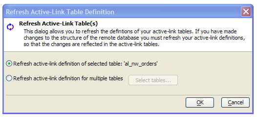 |
|
Refreshing Active-Link Table Definitions |
When you refresh the definition of an Active-Link table all of the auto-generated SQL statements are regenerated. If you change the structure of a remote table, and you add new columns to the table, the active-link table will NOT automatically display these new columns unless the active-link definition is first refreshed.
Of course, if you specified a custom SQL SELECT for the active-link table, you will need to manually edit your SELECT statement to include these new columns.
Duplicating an Active-Link Table
When you right-click on an active-link table in the Control Panel and select the Duplicate command, a new dialog is show that allows you to specify if you want the duplicated table to be another active-link table, or a native Alpha Five table. If you choose the native table option, then the standard 'Duplicate Table' dialog is shown.
Note that when you duplicate an active-link table to a native table, the resulting table will not have any records in it. It just has the structure of the active-link table, and also the dictionary of the active-link table. Because it has the active-link table's dictionary, all of the forms, reports, labels, etc that were defined for the active-link table are copied to the duplicated table.

Creating an Active-Link Definition using Xbasic
You can create a simple read-only active link definition on the fly using Xbasic. The a5_Active_Link_CreateReadOnly() function allows you to create ad-hoc, read-only active link tables.
Syntax:
L flag = a5_Active_Link_CreateReadOnly(C table_filename ,C connectionString ,C selectStatement [,L flagAddTableToDatabse ])
Where
| flag | .T. if active-link definition was created. |
| table_filename | Filename of the .dbf table (i.e. the active-link table definition) |
| connectionString | The connection string to the remote database. |
| flagAddTableToDatabase | Specify if the active-link table should be added to the current database. If you are creating a temporary active-link definition, it is much faster if you do NOT add it to the current database. |
Example:
The following code creates an an active-link table using a saved connection string to the sample Northwind database. The active-link table has just two columns, customerId and ContactName. A default browse is then opened to show the data in the active-link table.
a5_Active_Link_CreateReadOnly("c:\mydata\temptable.dbf","::name::northwind","select customerid, contactname from customers",.f.)
a5_open_default_browse("c:\mydata\temptable.dbf")
Understanding Local and Server-Side Queries
When you query an active-link table, you can either perform the query locally, or on the server. If you are working with an active-link table that is connected to a table with a few records, then it will probably make little difference if you use local queries, or server-side queries. But if your active-link table is connected to a server table that has a large number of records, then running queries on the server will be dramatically faster. This is because when you run a local query, Alpha Five has to first retrieve all of the data from the server before the query is actually run. With a server-side query, the query is performed on the server, and only the results of the query are retrieved.
If an active-link table is based on a stored procedure, rather than a SQL Select statement, then it is not possible to do further server-side queries after the active-link table has been opened. In this case, you must use local queries.
When you are working with a form or a browse layout that is based on an active-link table the following new method can be used to perform server-side queries:
.ServerSideQueryRun() .ServerSideQueryRetract() .ServerSideQuery_Show_All() .ServerSideRefreshAll()
For example, assume that the form 'Customers' is based on an active-link table. The following Interactive window session shows how both local and server-side queries can be performed:
dim p as p
p = form.view("customers")
'perform a local query
'notice that Xbasic syntax is used for the local query - strings are double quoted and the or operator is .OR.
p.QueryRun("city = \"London\" .or. city = \"Paris\"","lastname+firstname")
'turn off the local filter
p.Show_All()
'now do the same filter on the server
'notice that SQL syntax is used for the filter - strings are single quoted and the or operator is OR (not .OR.)
'also notice that the order parameter is a comma delimited list, not an expression
p.ServerSideQueryRun("city = 'London' OR city = 'Paris'","lastname, firstname")
'turn off the server-side filter
p.ServerSideQuery_Show_All()
When working with an active-link table using Xbasic, the following new table methods are available:
.ServerSideQueryRun() .ServerSideQueryRetract() .ServerSideQueryRetractAll() .ServerSide_Records_Get()
For example, assume that 'mysql_customers' is an active-link table that is bound to the 'customers' table in a MySQL database. The following Interactive window session shows how you can use Xbasic to perform local and server-side queries on this active-link table:
dim tbl as p
tbl = table.open("mysql_customers")
?tbl.records_get()
= 56,023
dim i as p
'Run a local query
i = tbl.Query_Create("","city = \"Boston\"","Lastname")
?i.records_get()
= 456
'Run a server-side query
? tbl.ServerSideQueryRun("city = 'Boston'")
= 456
'Now search for lastname = 'Smith' within the found set of Boston records
'To search within the found set, the additive flag is set to .t.
? tbl.ServerSideQueryRun("lastname = 'Smith'","",.t.)
= 23
'Now retract the last filter
? tbl.ServerSideQueryRetract()
= .t.
?tbl.records_get()
= 456
Query Optimizer
When you run a query on an active-link table using the standard Xbasic
If you prefer to run the query locally, you can bypass the Query Optimizer and force the query to be a local query by specifying the "L" query flag.
The "S" query flag turns on the Query Optimizer. By default this flag is assumed for queries on active-link tables.
Note:
How the Query Optimizer Analyzes Xbasic Filter/Order Expressions
The Query Optimizer uses these table methods to determine which part of a filter can be executed on the server and which part must be executed locally and whether the sorting can be done on the server:
For example, say you have an active-link table called 'customer'. The remote SQL table has a field called 'CityName'. In the active-link table definition, this field name was mapped to 'City'.
Here is an Interactive window session demonstrating these methods:
t = table.open("customer")
?t.to_sql_filter("(city = \"london\" .or. city = \"madrid\" ).and. foobar(city=\"london\")
","|")
= (CityName='london' or CityName="madrid")|foobar(city="london")
The function returns the client-side portion and the server side portion separated by the separator. A pipe in this case.
The server-side portion of the filter is:
(CityName='london' or CityName="madrid")
Notice that Alpha Five has translated the '.or.' operator (Xbasic syntax) to 'or' (SQL syntax). It has translated the active-link table fieldname 'City' to the corresponding field name in the remote table ('CityName'). It has changed the double quotes on the literal values to single quotes.
The client-side portion of the filter is:
foobar(city="london")
Foobar() is a UDF that the user wrote using Xbasic and there is no equivalent
server-side function, so this part of the filter must be performed locally.
.query_create() and .query_run() Methods
These two methods of a table object now support an additional flag in the case where the table is an active-link table. If "S" is included in the list of flags passed in, the query (or a portion of the query) will be run on the server if possible. For example, say that you had an active-link table called 'customers'.
t = table.open("customers")
indx = t.query_create("S","Lastname = 'smith'","Lastname")
In this case, Alpha Five will be able to translate the entire filter expression to SQL and will perform the query on the server.
Now consider the case where the filter expression uses a locally defined UDF:
t = table.open("customers")
indx = t.query_create("S","myfunction(Lastname) = 'smith'","Lastname")
In this case, the filter expression cannot be converted to SQL, and the query will be performed on the client (i.e. by Alpha Five).
In some cases, the filter expression can be decomposed into a part that can be done on the server and another part that must be done on the client. In that case, Alpha Five will perform the query on the server first to limit the number of records that must be queried on the client.
The following example contains a filter that can be decomposed in a server-side portion, and a client-side portion:
t = table.open("customers")
indx = t.query_create("S","state = 'ma' .and. myfunction(Lastname) = 'smith'","Lastname")
The "state= 'ma' " part of the filter can be performed on the server, and the "myfunction(lastname)" part of the filter will be performed on the client (i.e. by Alpha Five).
Querying Active-Link Tables from the User Interface
When you are working with a Form or Browse layout that is based on an active-link table (or a set in which the set's primary table is an active-link table), and you select a command that does a query (such as the Query Genie, Sort, Find by Key, Quick Filter, etc.), you can either do this query on the client side, or on the server side. If the active-link table is bound to a server table with a few records, then it does not make much difference where the query is executed. But if the active-link table is bound to a server table with millions of records, then it will make a huge difference.
When you select any type of query command, Alpha Five will display a dialog asking you where the query should be executed, as shown below.

The dialog allows you to specify a choice, and it also allows you to specify that in the future, the dialog should be suppressed.
When you check the 'Don't show this dialog in the future' box, some additional choices are shown:

You can specify that the query should always be server-side, client-side, or automatic, in which case Alpha Five will make the decision based on the number of records in the server table. If you choose the option to not show the dialog again, you can select the Query, Preferences command from the menus to display this dialog:

In your own application, you might want to deny your users the choice. The active-link table definition allows you to specify where queries should be run and whether users can have access to the Query, Preferences command to override you setting. Obviously, if you know that a particular active-link table will be bound to a server table with a large number of records, you will want to configure the active-link table definition to use server-side queries and not to allow the user to override this setting.
Query Genie for Server-side Queries
When you select the Query Genie command to execute a server-side query, the following dialog is displayed. The genie allows you to define a filter and and order that will be applied to the active-link table.
|
|
|
The Server-side Query Genie (Configured to show the Preview as as Tab Pane and not to show the SQL) |

The Query Genie's appearance can be configured. If you have a larger monitor, you might want to put the Preview window directly on on the main Query Genie window so that you don't have to go to a different tab pane in order to see the query preview. Also, if you are comfortable writing SQL WHERE clauses by hand, you might want to show the WHERE clause directly on the dialog. To configure the layout of the Query Genie, click the Preferences icon (leftmost icon) on the toolbar at the bottom of the genie.
|
|
|
Customizing the Server-side Query Genie Layout |

|
|
|
The Server-side Query Genie (configured to show the Preview window directly on the dialog, and to show the Filter Expression generated by the Genie) |

Two-way Editing of Filter Expressions
The Server-side Query Genie supports two-way editing. You can either define the filter by making selections in the top part of the dialog (i.e. using the builder), or you can type the filter directly into the 'Filter Expression' textbox. When you manually edit the expression shown in the 'Filter Expression' textbox, the 'Parse filter expression' hyperlink button becomes enabled and clicking on it causes Alpha Five to parse the expression you entered and to fill in the builder.
Watch video demonstration of this feature
Find by Key for Server-side Queries
When you are working with native Alpha Five tables, the 'Find by Key' feature in Alpha Five is used to quickly position the record pointer at the closest matching record. For example, say you have a table with 100,000 records that is sorted by Lastname. If you execute a 'Find by Key' command, searching for 'Smi', Alpha Five will position the record pointer on the record with the lastname that is closest to 'Smi' (e.g. 'Smith'). Alpha Five does not filter the table. After you execute the command you still have 100,000 records in your active query.
There is no server-side analogy for find by key, so when you execute a find by key command against an active link table, Alpha Five does a query looking for all records greater than, or equal to, the key value that you entered. So, in the above example, Alpha Five would execute a server-side query for left(lastname,3) >= 'smi'.
Understanding Record Locking in Active-Link Tables
When you are working with local Alpha Five tables, Alpha Five uses a record locking scheme called 'pessimistic record locking'. This means that when a user starts to edit a record, a lock is placed on that record and no other user can edit the record until the user releases the lock on the record (by either saving the record, or canceling changes). When working with active-link tables a different approach, called 'optimistic record locking' is employed. It is not desirable to lock records on the server (as it might result in performance degradation on the server). Instead, when a record is saved on the server Alpha Five can check to see if any other user has edited the record in the interval between starting to make changes, and then actually saving those changes. If the record has been changed in this interval, then the update will fail (so as to avoid overwriting any changes that were made by the other user). Whether Alpha Five checks for changes to the record before committing changes to the server database or not is actually configurable. See the section below on the Active-Link Table Definition.
The following Interactive window session demonstrates these issues (assume that 'access_customers' is an active-link table on the 'customers' table in the sample 'Northwind' database):
t1 = table.open("access_customers")
?t1.CONTACTNAME
= "Maria Anders "
'open another instance o
t2 = table.open("access_customers")
?t2.CONTACTNAME
= "Maria Anders "
'Change the value in the 'contactname' fields
t1.change_begin()
t1.CONTACTNAME = "Marla Stein"
t1.change_end(.t.)
'In the second open instance of the table, check the value of the 'contactname' field.
'Note that it still has its original value
?t2.CONTACTNAME
= "Maria Anders "
'Put the second instance into change mode and then check
the value of the 'contactname' field
t2.change_begin()
?t2.CONTACTNAME
= "Marla Stein"
'Note that 'contactname' now has the up-to-date value for this field.
'I.e. As soon as the record was put into change mode, Alpha Five automatically
'went back to the server to refresh the data in the
record.
'Change 'contactname' to a new value
t2.contactname = "Richard Rosen"
t2.change_end(.t.)
'Using the first instance, check the value of 'contactname'
'Note that it is still 'Marla Stein' because its contents
has not been refreshed
?t1.CONTACTNAME
= "Marla Stein"
'However, after we put the record into change mode, its
value is refreshed
t1.change_begin()
t1.change_end(.t.)
?t1.CONTACTNAME
= "Richard Rosen"
t2.change_begin()
t1.change_begin()
t1.CONTACTNAME = "cian test"
'Commit the change to the first instance
t1.change_end(.t.)
t2.CONTACTNAME = "kurt test"
'Now try to commit the change to the second instance.
'This will fail because the record that we are trying to update was changed AFTER
'we began editing it.
t2.change_end(.t.)
ERROR: Server side error updating row
The database could not find the data you requested
Refresh the data to see the current server values.
The above example shows that when working with an active-link table, it is possible to get an error on the .change_end() method. It is less likely, that you will get an error on the .change_begin() method. Contrast this with a native Alpha Five table. In a native table, it is quite possible to get an error on the .change_begin() method because Alpha Five might not be able to get a lock on the record you want to edit. However, if the .change_begin() succeeds, then the .change_end() will not fail because of a record locking issue (there may be other reasons why .change_end() will fail, and of course, your Xbasic code should allow for this possibility).
Here is how you could include error checking in a Xbasic script:
dim t as p
t = table.open("customer")
while .not. t.fetch_eof()
on error goto couldNotLockRecord
t.change_begin()
on error goto 0
t.salary = t.salary * 1.1
on error goto couldNotSaveRecord
t.change_end(.t.)
fetchNext:
t.fetch_next()
end while
end
couldNotLockRecord:
ui_msg_box("Error","Could not edit record number " + t.recno() + ". Failed to get lock on record."
goto fetchNext
end
couldNotSaveRecord:
ui_msg_box("Error","Could not save record number " + t.recno() + " after making edits."
goto fetchNext
end
Optimistic Record Locking in Forms and Browse Layouts
When you are editing a data in a Form or Browse layout that is based on an active-link table, and an optimistic lock error occurs, Alpha Five displays dialog boxes that give you options as to how you want to handle the error.
|
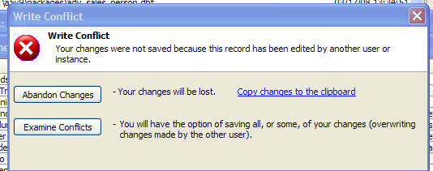 |
|
Write Conflict Warning. |
If you click the 'Abandon Changes' button then any changes you made to the record are lost, and the record in the Browse or Form layout is updated to show the current values on the server (which will reflect the changes made by the other user). Before you abandon your changes however, you might want to click the 'Copy changes to the clipboard' hyperlink so that you have a record of the changes that you were attempting to make.
Alternatively, you can click the 'Examine Conflicts' button, which brings up a dialog similar to this:
|
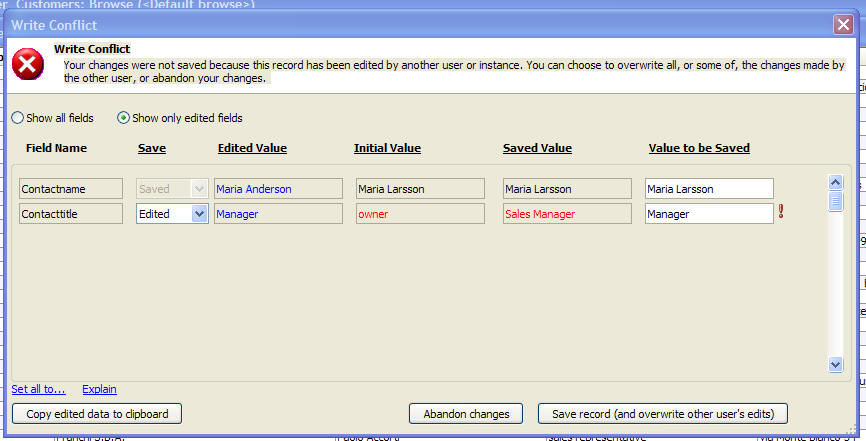 |
|
Examine Conflicts dialog box. |
This dialog allows you to selectively overwrite the changes made by the other user. For example in the image shown above you can see that when you first began editing the record the value in the 'Contactname' field was 'Maria Larsson' and the value in the 'Contacttitlle' was 'owner'.
After you began editing this record, but before, you saved any changes, another user changed the 'Contacttitle' field to 'Sales Manager' (shown in red in the 'Saved Value' column).
You then changed 'Contactname' to 'Maria Anderson', and 'Contacttitle' to 'Manager' (shown in blue in the 'Edited Value' column).
If you press the 'Save record (and overwrite other user's edits)' button, the values with the red exclamation mark icon in the 'Value to be Saved' column, will overwrite the other user's edits.
By making a selection in the dropdown box in the 'Save' column, you can selectively specify which of the edits you have made should overwrite edits made by the other user.
If you set the dropdown box to 'Saved' then you will not overwrite any data in this field. If you set the dropdown box to 'Initial' then you will reset the data in this field to its initial value (before you made any edits). If you set the dropdown box to 'Edited' then the edits you made to the record will be saved. You will notice that if you set the dropdown box to 'Saved' the exclamation mark icon next to the field is removed because this option does not overwrite edits made by the other user.
|
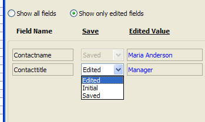 |
|
Options for handling a write conflict at the individual field level. |
Watch video showing optimistic record locking in a Browse layout
Prompting for Username and/or Password when Opening an Active-Link Table
When you define an active-link table, you can specify if Alpha Five should store the username and password to connect to the remote database in the active-link definition, or whether it should prompt for a password only, or user name and password.
If you specify that Alpha Five should prompt for a user name and/or password, you can suppress the prompt by supplying these values in the optional argument object that you can pass into the table.open() method.
In the example below, assume that 'customers' is an active-link table and that the connection string for link has a username of 'alpha' and a password of '70blanchard'.
Assume also, that the active-link definition specifies that Alpha Five will prompt for user name and password.
If you execute this command in the Interactive window, a dialog will appear asking for the user name and password:
t = table.open("customers")
Now, if you create and argument object and specify the user name and then again try to open the table, you will get prompt for the password (but not the user name). That's because the user name was passed in in the arguments object:
dim args as sql::arguments
args.add("username","alpha")
t = table.open("customers",args)
Finally, if you pass in both the user name and the password in the arguments object, Alpha Five does not display any dialog box before opening the table:
dim args as sql::arguments
args.add("username","alpha")
args.add("password","70blanchard")
t = table.open("customers",args)
Oracle Sequences
Oracle uses 'sequences' to implement auto-increment fields. This white paper discusses the use of Oracle sequences in the Alpha Five context.
Active-Link Tables on MySQL Databases
Unfortunately, MySQL is extremely slow at executing COUNT queries against large tables in situations where there is no WHERE clause to limit the number of records to be counted. As a result of this limitation in MySQL, if you create an active-link table definition on a large MySQL table, and you do not put a WHERE clause in the active-link definition SELECT statement, the active-link table would be slow to open.
This is because when an active-link table is first opened, Alpha Five executes a COUNT query to determine how many records will be in the active-link table.
Active-link table definitions include a 'FetchLimit' property. This property is only honored when connecting to a MySQL database. The 'FetchLimit' property specifies the maximum number of records to fetch from the server if the SELECT statement has no WHERE clause. The default value for this property is 1,000. If the FetchLimit is set to 0, then there is no FetchLimit.
When you are browsing the data in the active-link table and you reach the FetchLimit, Alpha Five will display a dialog telling you that you have reached the FetchLimit and asking you to specify a new FetchLimit.
There is really no 'down-side' to this new property because it is not limiting the number of records that can be shown in active-link table. It is merely limiting the number of records that are initially shown when an active-link table with no WHERE clause is opened.
In typical usage, a user will open a form or browse that is based on an active-link table, and then start searching for specific records. The form or browse will open quickly, and then once the user starts executing server-side queries, the FetchLimit will be removed because the active-link table will now have a WHERE clause.
When you open a form or browse on an active-link table that is linked to a
large MySQL table, if the active-link definition does not have a WHERE clause,
and if the number of records in the active-link table is equal to or greater
than the FetchLimit, the status bar, which normally shows the record count, will
show '
Active-Link Tables - Entering New Records
When you are using a Browse to display data from a table, and you click the 'Enter new Record' icon on the toolbar, Alpha Five gives focus to the 'new record row' in the Browse and fills in the rows above the 'new record row' with data from the records at the logical end of the table (based on the current sort order). For example, assume you are Browsing a table with 100,000 records, and your Browse shows 20 records. If you enter a new record, Alpha Five will show logical record number 999,981 to 100,000 followed by the 'new record row'.
In the case of native tables, regardless of the size of the table, Alpha Five can fetch the records from the end of the table very quickly, and so moving to the 'new record row' is immediate. However, in the case of active-link tables, fetching records from the end of the table can be slow if there are a lot of records in the table. This is because Alpha Five must retrieve all of the records from the server.
Because fetching all of the records from the server is potentially slow, when a Browse is based on an active-link table, Alpha Five uses the following rules to optimize performance:
- If all of the records in the active-link table have already been fetched, then when the user clicks the 'New Record' icon, Alpha Five will display the 'New Record' row and back fill the browse with data from the end of the table (same as behavior for native tables).
- If all of the records in the active-link table have not been fetched, and Alpha Five needs to fetch 5,000 or fewer records to get to the end of the table, then when the user clicks the 'New Record' icon, Alpha Five will display the 'New Record' row and back fill the browse with data from the end of the table (same as behavior for native tables).
- If Alpha Five would need to fetch more than 5,000 records to get to the end of the table, or if the active-link table has an unknown record count (only possible in the case of MySQL), then Alpha Five will show the 'New Record' row as the only row in the Browse. Since no data has to be fetched for the server in this case, moving to the 'New Record' row will be quick.
Tracing SQL
When working with active-link tables, it can sometimes be useful to see what SQL is actually getting sent to the server when you edit the data in an an active-link table. You can turn on SQL tracing when you define your connection string. The connection string dialog has a 'Trace SQL' checkbox. When you check this box, all SQL statements that are sent to the server are also echoed to the SQL pane in the Trace window. You can open the Trace window by selecting View, Trace Window from the menus.
Tip: If you base your active-link table definitions on named connection strings (rather than explicit connection strings), then it will be easy to turn on and off SQL tracing for all of your active-link tables because you can just go to one place to modify the connection strings for all of your active-link tables.

Methods for Active-Link Tables
Syntax: N RecordsFound =
Where:
| RecordsFound | Returns the number of records found by the query. If the layout is not based on an active-link table, returns -1. The the layout is based on an active-link table that does not allow incremental server-side querying, returns -2. For example, an active-link table that was based on a stored procedure would not allow incremental server-side querying. |
| filter | The filter expression. The filter expression must use portable SQL syntax. The filter is in addition to any filter that was defined when the active-link table was defined. For example if the SELECT statement for the active-link table was SELECT * FROM customers WHERE state = 'MA', then the active-link table will always have a base filter of state = 'MA'. I.e. any filter that is specified is in addition to the base filter. |
| order | The order expression. The order expression must use portable SQL syntax. |
| additive | Specifies if the filter should be in addition to any previous filters applied using the .ServerSideQueryRun() method. |
Examples:
The following Interactive Window session shows how the .ServerSideQueryRun() method can be used:
'assume that the 'customers' browse is based on an active-link table
p = Browse.Open("customers")
'sort data by city, without changing the filter
? p.ServerSideQueryRun("","City",.t.)
= 1000
'sort by lastname for city = 'London'
?p.ServerSideQueryRun("city='London'","lastname",.f.)
= 20
'search for title = 'manager' (additive)
'because additive is specified, the full filter is city = 'London' and title = 'manager'
'since the previous query was city = 'London'
?p.ServerSideQueryRun("title = 'manager'","",.t.)
= 5
'search for title = 'manager' (not additive)
'since the query is not additive, the full filter is title = 'manager' (i.e. previous queries are ignored)
?p.ServerSideQueryRun("title = 'manager'","",.f.)
= 345
Syntax: L Result =
Syntax: L Result =
Syntax: N RecordsFound =
Where:
| RecordsFound | Returns the number of records found by the query. If the table is not an active-link table, returns -1. The the active-link table does not allow incremental server-side querying, returns -2. For example, an active-link table that was based on a stored procedure would not allow incremental server-side querying. |
| filter | The filter expression. The filter expression must use portable SQL syntax. The filter is in addition to any filter that was defined when the active-link table was defined. For example if the SELECT statement for the active-link table was SELECT * FROM customers WHERE state = 'MA', then the active-link table will always have a base filter of state = 'MA'. I.e. any filter that is specified is in addition to the base filter. |
| order | The order expression. The order expression must use portable SQL syntax. |
| additive | Specifies if the filter should be in addition to any previous server-side filters that were applied. |
Syntax: L Result =
Syntax: L Result =